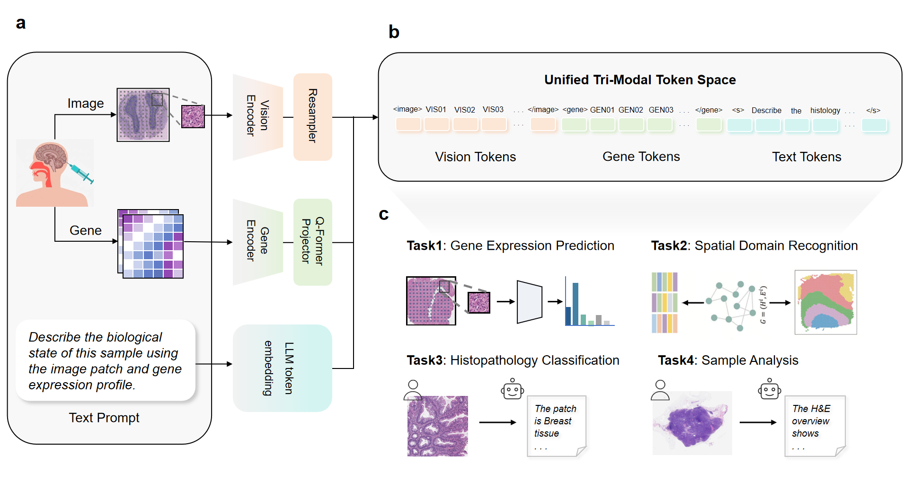
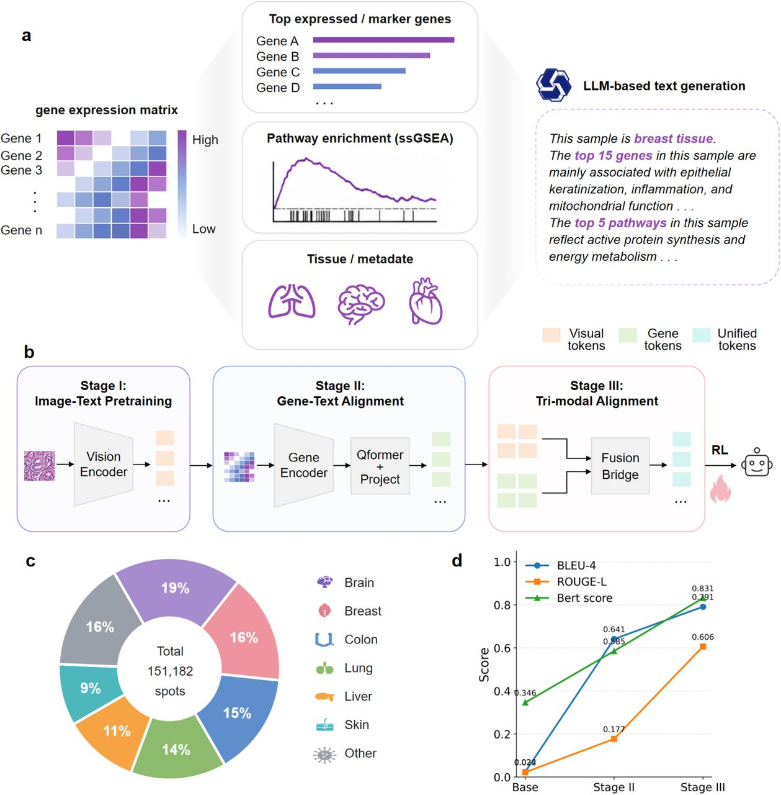
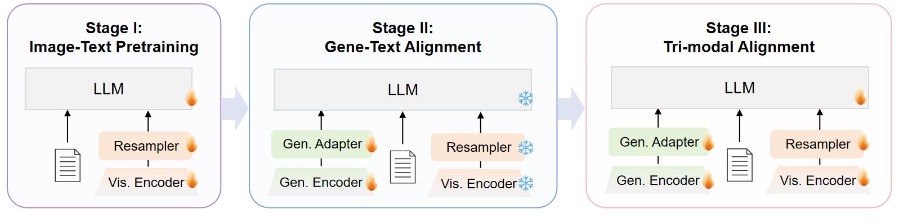
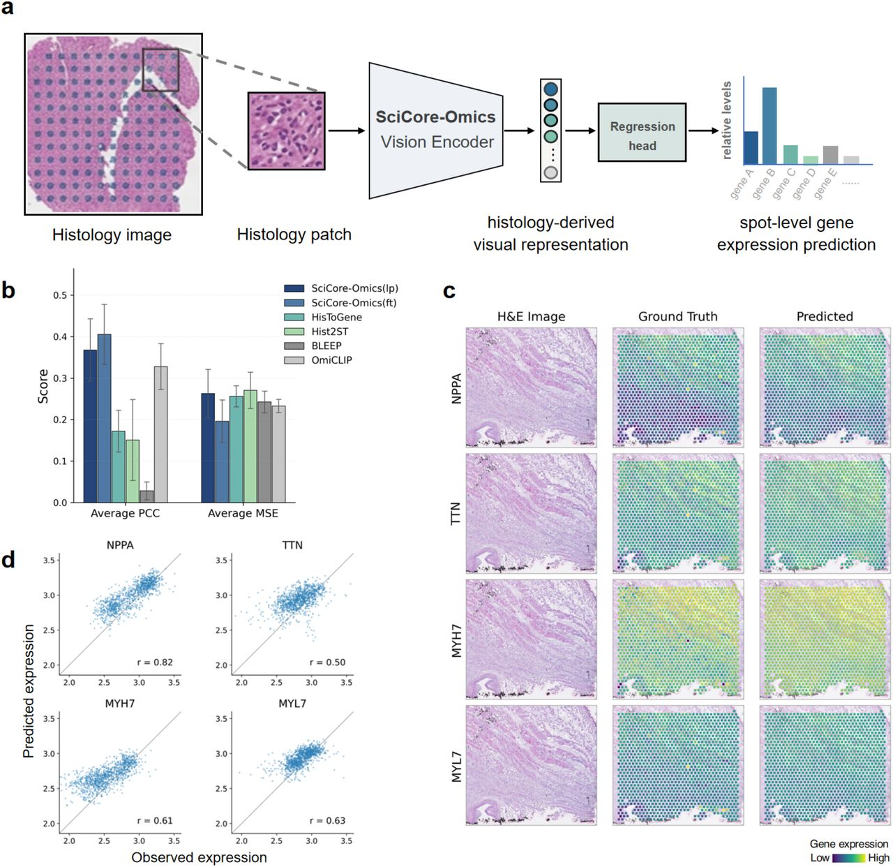
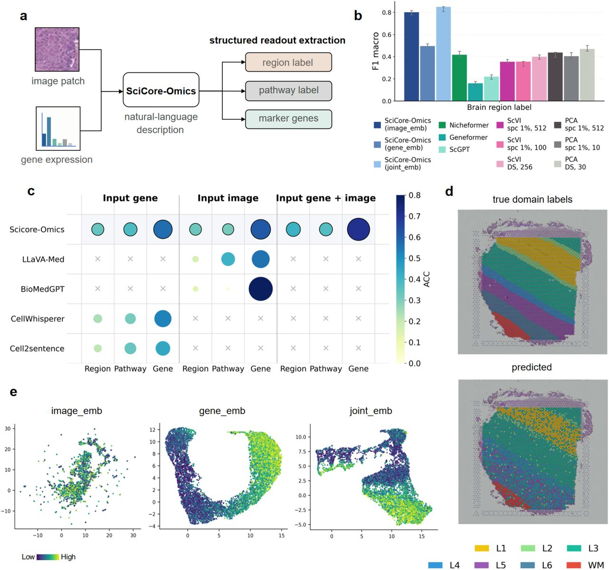
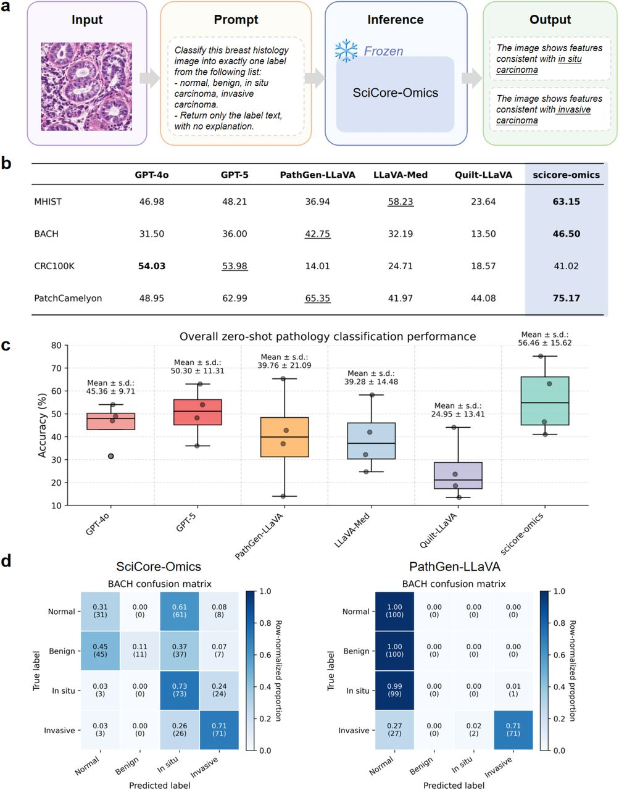
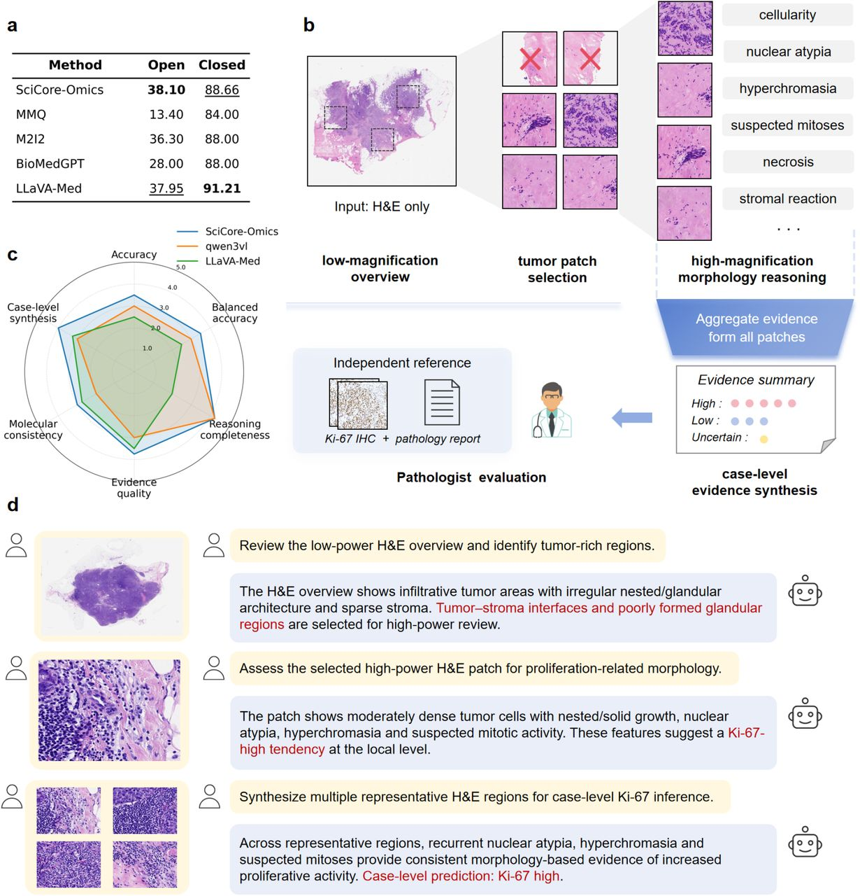

TRI-MODAL FOUNDATION MODEL FOR SPATIAL BIOLOGY
SciCore-Omics：连接组织形态、空间转录组与生物语言
SciCore-Omics 将 H&E 组织学图像、空间转录组表达谱与生物学语言压入统一的自回归 token 空间。本文结合 bioRxiv 全文、官方图表与开源代码，详细拆解数据集构建、端到端算法、渐进式训练、六类下游评测和基线对比结果。
01 · 研究问题与核心贡献
把空间转录组作为语言模型的原生模态
既往空间生物学模型通常只处理 image-gene、image-text 或 gene-text 的两两映射。SciCore-Omics 将 H&E、表达谱和文本都转换为统一维度的 embedding span，交给同一个因果语言模型联合建模，从而用一套骨干支持分子预测、空间域识别、病理分类、问答和病例级解释。
数据贡献
构建 151,182 个 spot 级 image-gene-text 三元组，并用证据约束方式把表达谱转成生物学描述。
模型贡献
以 NicheFormer、32-query Gene Q-Former 和 projector 给转录组建立固定长度的 LLM 接口。
验证范围
从分子、spot、组织、patch 一直评测到病例级推理，而非只验证单一预测头。

02 · 数据与三模态样本构建
三类训练资源如何汇合
论文没有把所有数据简单混成一个池，而是按模态成熟度组织为渐进式课程。
图像-文本资源
约 503,016 张图像与 2,852 万条文本，来自病理教材、PubMed Central、PathGen-1.6M、STimage-1K4M 等病理图文资源，用于建立形态和病理术语的对应。
基因-文本资源
约 51,602 对，来自 GEO、10x Genomics 和公开转录组资源。表达谱先转换为结构化分子证据，再生成受约束的生物学描述。
图像-基因-文本资源
151,182 个通过质控的空间 spot。每个 spot 对应一个局部 H&E patch、一条匹配的表达向量，以及由同一表达谱推导的文本描述。
spot 级三模态样本生成流程
核心不是让通用 LLM 自由“看基因编故事”，而是先计算结构化证据，再让 GPT-4 受约束地将证据语言化。

03 · 模型架构与训练流程
从原始模态到统一 token 序列
训练课程、目标函数与实现参数
Stage I · Histology-Text
先适配视觉分支和语言骨干到病理图文语义，学习组织形态、细胞外观与病理术语。
Stage II · Gene-Text
加入 NicheFormer、Q-Former 和 projector，将表达谱表示对齐到语言语义空间。
Stage III · Tri-modal
用 spot 级三元组联合优化，并混入少量 UltraChat、Flickr30k 等通用数据以减轻灾难性遗忘。
论文目标函数
- 标准自回归 language-model loss。
- image-text、gene-text、image-gene 可用模态对之间的 InfoNCE-style 对比损失。
- 三阶段后追加离线 reward-weighted refinement，主要约束格式、语言一致性和证据忠实度。
仓库桥接蒸馏
- 文本-only LLM 隐状态作为 teacher target。
- 总损失默认权重：0.2×CE + 1.0×cosine + 1.0×InfoNCE + 0.5×分类损失。
- 只训练 gene_qformer、gene_projector 和可选 gene_cls_head；NicheFormer 冻结。
论文主训练配置
- 2 epochs，per-device batch size 1，gradient accumulation 16。
- 学习率 5×10⁻⁴，cosine schedule，warmup 0.1，weight decay 0.01。
- max length 2048，5% 验证集，seed 42；8 × NVIDIA A800 40GB，bfloat16。

04 · 评测设计与主要结果
4.1 转录组条件文本生成
协议：输入 held-out gene profile，输出对应生物学描述；使用 BLEU-4、ROUGE-L 与 BERTScore F1 比较基础模型、gene-text 对齐后模型及最终三模态模型。
| 模型阶段 | BLEU-4 | ROUGE-L | BERTScore F1 | 解释 |
|---|---|---|---|---|
| Base：无显式 gene-text 对齐 | 0.024 | 0.022 | 0.346 | 几乎不能恢复结构化分子描述 |
| Stage II：gene-text alignment | 0.641 | 0.177 | 0.585 | 语义对齐明显建立，但长序列结构仍有限 |
| Stage III：tri-modal alignment | 0.791 | 0.606 | 0.831 | 词汇、结构和生物医学语义均进一步提升 |
4.2 H&E 预测心脏空间基因表达
协议：Human Heart Cell Atlas 的 39 个正常心脏空间切片，按 section 做 10-fold cross-validation；保留检测基因数不少于 500 的 spot，预测训练集最高表达的 50 个基因，指标为 PCC 与 MSE。
Frozen encoder
- SciCore-Omics 平均 PCC = 0.3679。
- 平均 MSE = 0.2629。
- 仅训练轻量回归头，说明预训练视觉表征已包含分子信息。
Fine-tuning
- 解冻视觉编码器最后 6 层。
- 相对 OmiCLIP：mean PCC 提高 23.6%。
- 相对 OmiCLIP：mean MSE 降低 15.8%。
代表基因 spot-level r
- NPPA：0.82。
- TTN：0.50；MYH7：0.61。
- MYL7：0.63；预测空间图较真实表达更平滑、动态范围被压缩。
比较方法：OmiCLIP、Hist2ST、HisToGene、BLEEP；所有方法按相同 section split、50-gene panel 与预处理协议重训。
4.3 DLPFC 空间域与结构化生物学读出
协议：12 个带人工皮层层级标签的 Visium 切片，8 个训练、4 个 held-out；分别评估冻结 embedding 的空间域分类，以及 region、pathway、marker gene 的生成式结构化读出。
| 设置 | 结果 | 对比 |
|---|---|---|
| Frozen image embedding | macro-F1 = 0.801 | 外部 embedding 基线：NicheFormer、Geneformer、scGPT、scVI、PCA；最强外部结果 macro-F1 = 0.470。 |
| Frozen gene embedding | macro-F1 = 0.496 | |
| Joint image-gene embedding | macro-F1 = 0.850 | |
| Gene-only 生成式读出 | region/pathway/gene mean ACC = 0.430 | 比 CellWhisperer 高 19.4%，比 Cell2Sentence 高 30.3%。 |
| Image-only 生成式读出 | mean ACC = 0.417 | 比 LLaVA-Med 高 12.6%，比 BioMedGPT 高 30.2%。 |
| Joint image-gene 生成式读出 | mean ACC = 0.497 | region 0.41 / pathway 0.37 / gene 0.71；比 gene-only 高 15.5%，比 image-only 高 19.2%。 |
4.4 零样本病理分类
协议：在 MHIST、BACH、CRC100K/CRC-VAL 和 PatchCamelyon 上提供闭集候选标签，不做微调，也不给 in-context example，以 image/patch-level accuracy 评估。
| 模型 | MHIST | BACH | CRC100K | PatchCamelyon | 四数据集均值 |
|---|---|---|---|---|---|
| GPT-4o | 46.98 | 31.50 | 54.03 | 48.95 | 45.36 |
| GPT-5 | 48.21 | 36.00 | 53.98 | 62.99 | 50.30 |
| PathGen-LLaVA | 36.94 | 42.75 | 14.01 | 65.35 | 39.76 |
| LLaVA-Med | 58.21 | 32.19 | 24.71 | 41.97 | 39.28 |
| Quilt-LLaVA | 23.64 | 13.50 | 18.57 | 44.08 | 24.95 |
| SciCore-Omics | 63.15 | 46.50 | 41.02 | 75.17 | 56.46 |
SciCore-Omics 在 4 个 benchmark 中赢得 3 个，均值比 GPT-5 高 6.16 个百分点；CRC100K 仍落后于 GPT-4o/GPT-5，但高于三种开源 biomedical VLM。
4.5 PathVQA 与乳腺癌病例级推理
协议：PathVQA 约含 4,998 张病理图与 32,795 个 QA 对，微调后分别评测开放式和封闭式问题；病例级实验使用内部 10 例乳腺癌 WSI，按低倍定位、高倍 patch、病例证据汇总的流程推理，Ki-67 IHC 与病理报告只供专家评分参考。
| 模型 | PathVQA Open | PathVQA Closed | 10 例乳腺癌专家均分 |
|---|---|---|---|
| SciCore-Omics | 38.10 | 88.66 | 3.67 |
| MMQ | 13.40 | 84.20 | — |
| M2I2 | 36.30 | 88.00 | — |
| BioMedGPT | 28.00 | 88.00 | — |
| LLaVA-Med | 37.95 | 91.21 | 2.75 |
| Qwen3-VL | — | — | 3.04 |
病例级专家评分包含 accuracy、balanced accuracy、reasoning completeness、evidence quality、molecular consistency、case-level synthesis 六个维度。SciCore-Omics 除 reasoning completeness 与 Qwen3-VL 并列外，其余维度均最高；但 10 例仅是 proof-of-concept，不构成临床验证。




05 · 代码实现与复现状态
model/modeling_minicpmv.py完整串联 Qwen2、SigLIP、视觉 Resampler、NicheFormer、Gene Q-Former 与 Gene Projector；图像和基因表示都以 embedding span 方式注入语言模型。
核心实现已公开model/config.json公开了 28 层、3584 hidden size 的语言模型配置，27 层 SigLIP 视觉塔、64 个视觉 query，以及 12 层 NicheFormer 和 1,500 gene context。
配置可核对gene_qformer_module.py实际实现为轻量 4 层 Q-Former：32 个可学习 query，先 self-attention，再对 gene tokens 做 cross-attention，最后经过 FFN。
结构可核对train-distill-gene/包含基因桥接蒸馏的单卡、DDP 和真实 processor 路径；损失组合包括语言生成 CE、cosine alignment、InfoNCE 与可选分类损失。
训练入口已公开train-swift-cpt-sft/通过 ms-swift 自定义注册支持 CPT/SFT，但示例脚本仍要求用户替换模型、数据、输出和词表路径，不是下载后即可完整复现实验的封装。
需自行配数据train-rl/实现固定候选答案上的离线 clipped reward-weighted objective 与 KL penalty；规则奖励覆盖 region、gene、pathway、格式、语言和不受支持的病理模板惩罚。
优化代码已公开eval/ + README本地推理、图像/基因 embedding 提取和在线 Demo 均存在；论文给出评测协议与结果，但仓库尚未包含 Figure 3–6 全部 benchmark 的一键运行脚本和训练数据清单。
需重建评测流程06 · 结论、局限与研究启示
SciCore-Omics 最重要的贡献，是把空间转录组从一个外部监督信号转化为大语言模型可直接消费的原生模态，并证明统一生成式接口能够跨越分子预测、空间组织解析与病理语言任务。论文提供了有说服力的“可行性证据”，但现有实验尚不能证明模型学到了稳定、可迁移的形态—分子机制，更不能把生成式生物学解释等同于经过验证的因果解释。
贡献在于统一接口，而非单项指标刷新
真正的新意不是某个分类器或回归头，而是将视觉 token、基因 token 与文本 token 放入同一因果解码上下文。联合模态在 DLPFC 上优于任一单模态，说明形态与表达提供互补条件信息；但这种增益仍混合了数据规模、课程训练和指令微调的作用，需要更系统的消融才能归因于三模态架构本身。
固定长度基因接口是一种有代价的压缩
Gene Q-Former 将最多 1,500 个表达 token 压缩为 32 个查询表示，显著降低了与 LLM 对接的成本，也建立了清晰的模态瓶颈。代价是稀有基因、低丰度信号、共表达结构和平台特异性偏差可能被抹平。后续应报告 query 数量、基因排序、归一化方式及缺失基因处理对性能和生物学忠实度的敏感性。
语言一致性不等于生物学正确性
训练文本由高表达基因、marker 与通路富集结果再语言化，因此 BLEU、ROUGE 和 BERTScore 主要衡量模型能否重建这种描述体系，而不能独立验证机制解释是否正确。更严格的评估应加入基因与通路事实核验、反事实输入、扰动响应、专家盲评及可追溯证据引用，以区分流畅生成与可信推理。
跨数据集成绩尚未覆盖真实域偏移
现有结果覆盖多种任务，但训练资源与评测集可能共享病理语汇、组织类型或数据生成流程。决定实际泛化能力的将是患者级和中心级严格隔离，以及对染色批次、扫描仪、空间转录组平台、疾病亚型和低质量切片的外部验证。尤其需要排查文本模板与 benchmark 标签之间的潜在语义泄漏。
模型与核心代码开源，是值得肯定的实质性贡献
相较不少同类生物医学基础模型仅公开论文、在线 Demo 或受限接口，SciCore-Omics 同时发布模型权重、核心网络实现、推理代码及多类训练入口，使研究者能够本地部署、检查模态桥接机制并开展二次适配。这种开放程度显著提升了工作的可验证性和社区延展价值。当前不足主要在复现工程尚未完全闭环：训练数据版本、样本去重与 split、完整预处理配置以及 Figure 3–6 的一键评测脚本仍需补齐；这些限制应被视为后续完善方向，而不应掩盖其开放模型和关键实现本身的积极意义。
更适合作为分子假设生成器
从常规 H&E 提出分子线索具有研究价值，但 10 例乳腺癌评估只能说明输出具有初步可读性。面向转化应用，还需要前瞻性多中心队列、概率校准、失败检测、拒答机制、亚组公平性分析，以及与真实检测成本和临床决策增益相关的评价；在此之前，不应将模型输出视为分子检测或病理诊断的替代品。
参考链接
- SciCore-Omics：bioRxiv v1 GitHub 模型权重 在线 Demo
整理日期：2026-06-11。若论文作者后续公开代码、权重或更新版本，建议同步跟踪。